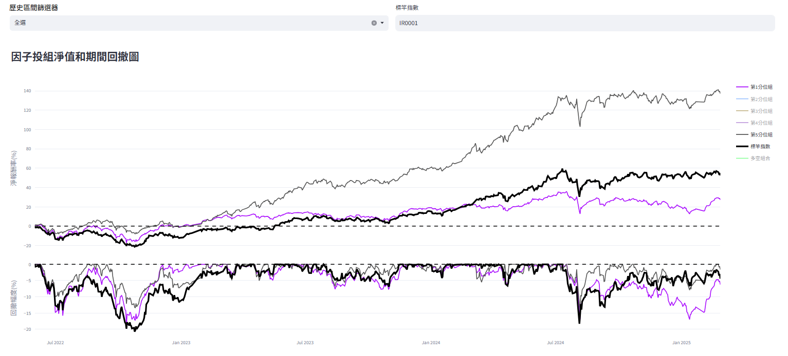
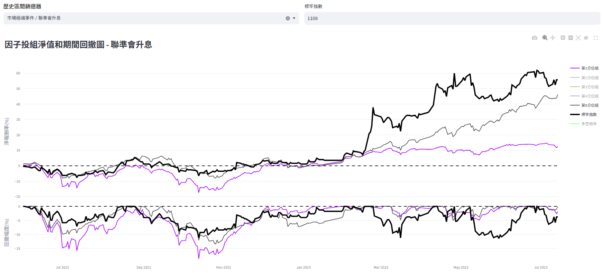
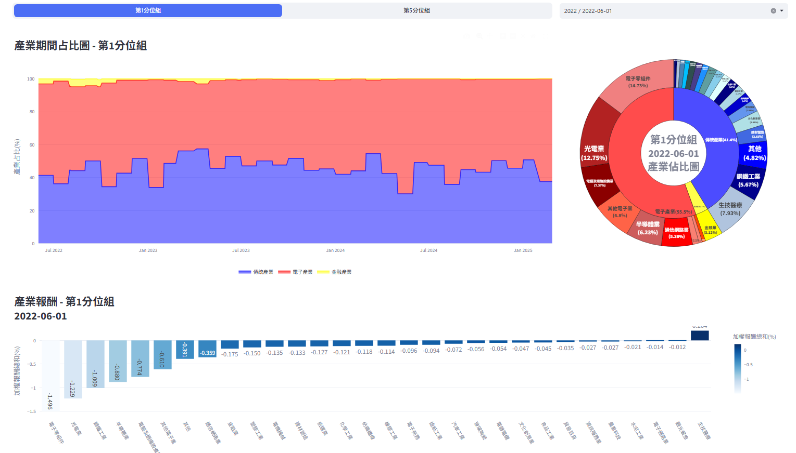

3. 投組分析#
分析實際使用因子所選之股票組成投資組合，觀察其在回測歷史期間的淨值走勢以及績效指標，以便了解使用該因子組成投組之風險報酬屬性。
3.1. 期間走勢#
依據各因子投組於再平衡日組成之成分股與分配之權重，計算回測期間的投組報酬，用以分析因子實際用於選股投資的歷史表現，公式如下：
其中
\(\text{Portfolio}_{g,t}\)為第g因子投組於t日的加權報酬總和；
\(w_{i,g,t}\)為個股i於第g因子投組中在t日的權重；
\(\text{return}_{i,t^*}\)為個股i於t日之報酬率；
k為第g因子投組於t日之成分股數。
圖形上方為投組淨報酬率使用各因子投組之每日報酬複利連乘而來，下方為期間的回徹幅度。除此之外，最上方亦提供歷史區間篩選器以及標竿指數輸入處，提供使用者想查看特定年份或重大事件，以及想將投組與特定個股比對之功能。

如下圖為歷史區間篩選器選擇聯準會升息(2022/06/01 ~ 2023/07/14)期間，並且選擇幸福水泥(1108)作為同期間標竿指數(黑線)的結果。

除了投組淨報酬率圖以外，下方亦提供各因子投組與標竿指數的績效指標，方便使用者更好量化因子投組的表現。

績效指標說明如下：
年化報酬率：
\[ \text{Annual Return}_g = \left( \prod_{t=1}^{N} (1 + \text{Portfolio}_{g,t}) \right)^{\frac{D}{N}} - 1 \]其中 \(\text{Annual Return}_g\)為第g因子投組的年化報酬率； \( \text{Portfolio}_{g,t}\)為第g因子投組於t日的加權報酬總和； N為回測歷史總天數；D為一年天數，此處設為252日。
累積報酬率：
\[ \text{Cumulative Return}_g = \prod_{t=1}^{N} (1 + \text{Portfolio}_{g,t}) - 1 \]其中 \(\text{Cumulative Return}_g\)為第g因子投組的累積報酬率； \(\text{Portfolio}_{g,t}\)為第g因子投組於t日的加權報酬總和； N為回測歷史總天數。
年化波動度：
\[ \text{Annual Volatility}_g = \text{Std}(\text{Portfolio}_{g,t}) \cdot \sqrt{D}, \quad t \in [1, N] \]其中 \(\text{Annual Volatility}_g\)為第g因子投組的年化波動度； \(\text{Portfolio}_{g,t}\)為第g因子投組於t日的加權報酬總和； D為一年天數，此處設為252日；N為回測歷史總天數。
夏普比率：
\[ \text{Sharpe Ratio}_g = \frac{\text{Mean}(\text{Portfolio}_{g,t}) - R_{\text{free}}}{\text{Std}(\text{Portfolio}_{g,t})} \cdot \sqrt{D}, \quad t \in [1, N] \]其中 \(\text{Sharpe Ratio}_g\)為第g因子投組的夏普比率； \(\text{Portfolio}_{g,t}\)為第g因子投組於t日的加權報酬總和； D為一年天數，此處設為252日；N為回測歷史總天數； \(R_{\text{free}}\)為同期間的無風險利率，此處設為0； N為回測歷史總天數。
超額夏普比率：
\[ \text{Excess Sharpe Ratio}_g = \frac{\text{Mean}(\text{Portfolio}_{g,t} - \text{Benchmark}_t)}{\text{Std}(\text{Portfolio}_{g,t} - \text{Benchmark}_t)}, \quad t \in [1, N] \]其中 \(\text{Excess Sharpe Ratio}_g\)為第g因子投組的超額夏普比率； \(\text{Portfolio}_{g,t} \)為第g因子投組於t日的加權報酬總和； \(\text{Benchmark}_t\)為標竿指數於t日的報酬率，此處預設為台股加權報酬指數（IR0001）； N為回測歷史總天數。
索提諾比率：
\[ \text{Sortino Ratio}_g = \frac{\text{Mean}(\text{Portfolio}_{g,t}) - R_{\text{required}}}{\text{Std}(\text{Portfolio}_{g,t,\text{negative}})}, \quad t \in [1, N] \]其中 \(\text{Sortino Ratio}_g\)為第g因子投組的索提諾比率； \(\text{Portfolio}_{g,t}\)為第g因子投組於t日的加權報酬總和； \(R_{\text{required}}\)為最低要求報酬，此處預設為0； \({Portfolio}_{g,t,\text{negative}}\)為第g因子投組於回測歷史的負向報酬； N為回測歷史總天數。
最大回撤：
\[ \text{Max Drawdown}_g = \max_t \left(1 - \frac{\text{Cumulative Return}_{g,t}}{\max_{s \leq t} \text{Cumulative Return}_{g,s}} \right), \quad t \in [1, N] \]其中 \(\text{Max Drawdown}_g\)為第g因子投組的期間最大回撤值； \(\text{Cumulative Return}_{g,t}\)為第g因子投組於t日的累積報酬率； \(\max_{s \leq t} \text{Cumulative Return}_{g,s}\)為第g因子投組於t日（含）的累積報酬率最大值； N為回測歷史總天數。
Alpha、Beta：
\[ \text{Alpha}_g = \left( 1 + \frac{1}{N} \sum_{t=1}^{N} (\text{Portfolio}_{g,t} - R_{\text{free}} - \beta_g \cdot \text{Benchmark}_{t,\text{free}}) \right)^D - 1, \quad t \in [1, N] \]\[ \text{Beta}_g = \frac{\text{Cov}(\text{Portfolio}_{g,t}, \text{Benchmark}_{t,\text{free}})}{\text{Var}(\text{Benchmark}_{t,\text{free}})} \]其中 \(\text{Alpha}_g\)為第g因子投組的Alpha值； \(\text{Portfolio}_{g,t} - R_{\text{free}}\)為第g因子投組於t日的報酬減去t日無風險利率，無風險利率此處預設為0； \(\text{Benchmark}_{t,\text{free}}\)為標竿指數於t日報酬減去t日無風險利率，標竿指數預設為台股加權報酬指數（IR0001）； D為一年天數，此處設為252日；N為回測歷史總天數。
3.2. 產業分布#
使用證券交易所與櫃買中心公告之產業分類，原訂共有47個產業類別，此處為求方便分析使用，將不同交易市場但產業類別相同之個股劃分為同一產業，最終共有35個子產業類別。又為求時序列上分析方便，將35個子產業類別進一步聚合成「電子、傳統、金融」等三大主產業，表格如下：
| 主產業 | 子產業 |
|---|---|
| 電子 | 電子零組件、半導體業、電腦及週邊設備業、光電電子業、通訊網路業、光電業、電子通路業、資訊服務業、電子商務、數位雲端 |
| 傳統 | 水泥工業、食品工業、觀光餐旅、塑膠工業、汽車工業、紡織纖維、橡膠、造紙業、電機機械、鋼鐵工業、生技醫療、營建資產、化學生技醫療、航運業、能源工業、傳產工業、百貨通路、橡膠機械、消費百貨、文化創意、農業科技、運動休閒、居家生活、綠能環保 |
| 金融 | 金融業 |
產業期間占比圖：依據前項三大產業進行聚合之主產業時序列占比圖，將每天分別屬於各主產業下的子產業權重加總。
產業報酬：各子產業下加權報酬總和，公式如下：
\[ \text{Sub Industry Return}_{g,j,t} = \sum_{j=1}^{k} w_{j,g,t} \cdot \text{Holding Return}_{j,g,t}, \quad t \in [1, \text{Period}] \]其中 \(\text{Sub Industry Return}_{g,j,t}\)為第g因子投組下j產業於t日的加權後持有期間報酬總和； \(w_{j,g,t}\)為個股i於第g因子投組下在t日時的投組權重； \(\text{Holding Return}_{j,g,t}\)為個股i在第g因子投組於t日的持有期間報酬，例如個股從月初持有到下一月初時的期間報酬； Period為回測期間的再平衡週期數。

3.3. 交易紀錄#
交易紀錄提供使用者查看各因子投組於回測期間之成分股、買賣時間與價格與含息報酬等資訊。點擊每列最右側的「打開報表」按鍵會載入該股票位於指定因子投組期間的所有進出場與報酬率，協助使用者更好觀看投組的報酬來源。